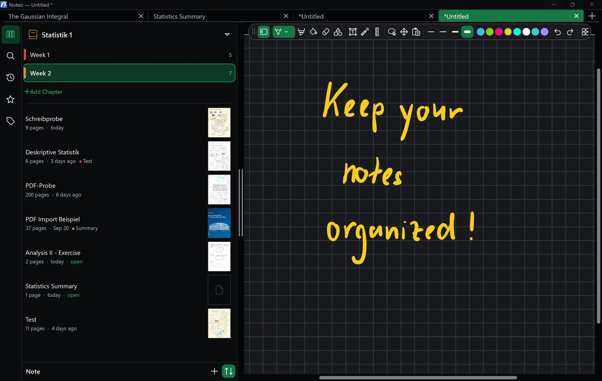
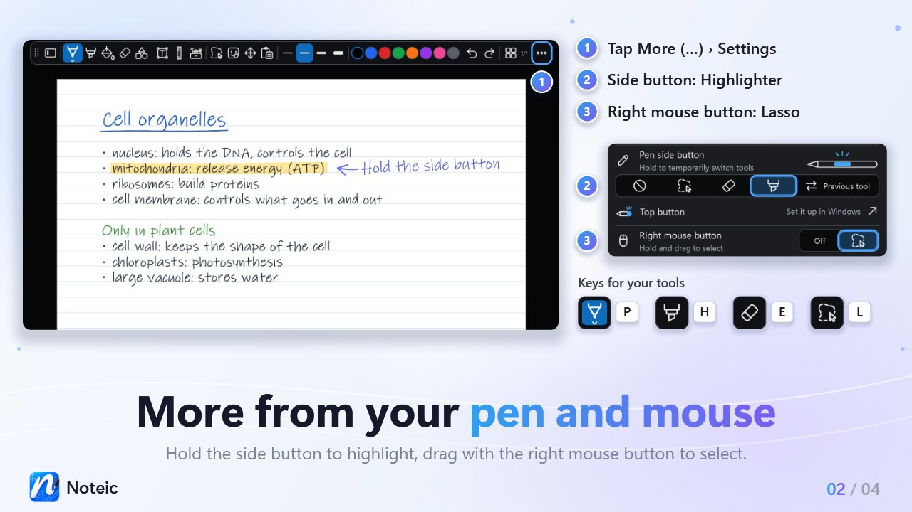

Settings
Since Noteic 1.7, Settings is one window over your note, with seven categories on the left. Open it with … › Settings or with Ctrl+,.
Open and close#
- Tap … (More) at the end of the toolbar and choose Settings, or press Ctrl+,.
- Choose a category on the left: Appearance, Writing, Pen, touch & mouse, Pages, Text, Library or About.
- Close Settings with the ×, with Esc, with Ctrl+, or with a tap outside the window.
- Switches and choices apply right away. Only Smooth page motion needs a restart of Noteic.
- In a narrow window, Settings first shows the list of categories. Tap one to open it; the arrow at the top goes back to the list.
- If your PC or your pen cannot use a setting, its switch is grayed out and the row says why.
Appearance#
- Theme: Light, Dark or System. System follows your Windows setting and is the default.
- Accent color: Blue, Indigo, Purple, Pink, Orange, Gold, Green, Petrol or Graphite. It colors Noteic itself, never your ink or paper.
- Dark pages: shows your pages dark on screen. Files, exports and PDF pages stay as they are. See Dark pages.
- Customize toolbar: opens the list of tools, where you choose which tools you see and how many widths and colors the toolbar shows. See Customize the toolbar.
To move the toolbar to another edge of the window, drag its grip. See Move the toolbar.

Writing#
- Ink prediction: Off, Gentle, Full or Max (8, 16 or 24 ms ahead). The ink runs a little ahead of the pen tip, which shortens the visible gap, but can overshoot briefly when you lift the pen. From the start it is Off while Fast pen tip draws the tip, and Gentle otherwise. Since Noteic 1.8, a level you choose also works at the Fast pen tip. See Ink prediction.
- Fast pen tip: Windows draws the newest ink right at the tip of your pen. For all pens, not the highlighter. Needs Windows 11 24H2 or newer. See Fast pen tip.
- Earlier pen input: hands new strokes to the ink a few milliseconds sooner. May use a little more battery. See Earlier pen input.
- Haptic feedback: a pen with haptics vibrates on snapping, erasing and lasso selection. It follows the haptic signals setting in Windows. See Haptic feedback.
Fast pen tip, Earlier pen input and Haptic feedback are on from the start.
Hold for shape and Pressure sensitivity are not here: they belong to each pen and are in the pen menu. See Pen settings.
Pen, touch & mouse#
- Pen cursor: what you see while your pen hovers: Default, a dot, a crosshair or an arrow. See Pen cursor.
- Pen side button: what the side button of your pen does while you hold it: nothing special (the default), Lasso, Eraser, Highlighter or Previous tool. See Pen side button.
- Top button: the top button of your pen is set up in Windows. Set it up in Windows opens Windows Settings › Bluetooth & devices › Pen & Windows Ink.
- Tap gestures: tap with two fingers to undo, with three to redo. On from the start. See Undo with your fingers.
- Scribble to erase: zigzag quickly through ink to erase it. Off from the start. See Scribble to erase.
- Right mouse button: Off (the default), or the lasso icon to hold the button and drag to select. See Right mouse button.

Pages#
- Smooth page motion: heavy pages use prepared tiles while you zoom and scroll. Off by default. Restart Noteic to apply a change.
- Paper & size: opens the page menu for the background, grid and size of the current page. The arrow at its top brings you back to Settings. See Pages and paper.
You also reach the page menu directly with … › Paper & size.
Text#
Default text box font shows the font, size and color for new text boxes. To change it, set up a text box the way you like and choose … › Set as default in its toolbar. Reset goes back to Segoe UI, 12 pt, black.
Library#
The first row shows the folder where your notes live, by default Documents\Noteic.
- Open in Explorer opens the folder.
- Use another folder… picks another folder as the workspace. Your notes stay where they are.
- Read handwriting for search: Noteic reads your handwriting on this PC with the Windows handwriting recognizer, so search finds what you wrote by hand. It works offline and is on from the start. See Search › Turn reading off.
- Clear recognized words: removes the words read from your handwriting. Your notes stay as they are, and Noteic reads your handwriting again when you search. See Clear recognized words.
What Noteic stores for the handwriting search is in the privacy policy. To keep several workspaces, for example one per semester, see Library › Workspaces.
About#
- Noteic with your version, for example Version 1.8.0.0.
- What's new: the highlights of your version in a small window. There, All versions opens the What's new page of this website, r/Noteic opens the subreddit and Rate us opens the rating in the Microsoft Store. A red NEW label marks the row until you have opened it.
- r/Noteic on Reddit: questions, ideas and news about updates, in your browser.
- Contact: opens your e-mail app with a new message to the developer. See Support.
- Diagnostics: shows performance and memory usage next to the page.
About Noteic is no longer in the … menu. Your version and the links are here.